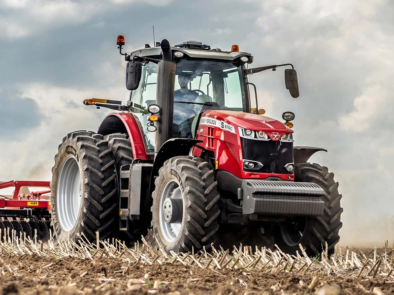

Massey Ferguson 8735

Massey Ferguson 8735 – це флагманський важкий трактор, створений для наймасштабніших і найскладніших польових операцій. Завдяки системі подвійного турбонаддуву, машина демонструє колосальний крутний момент на низьких обертах, що забезпечує стабільну тягу під час роботи з 12-метровими сівалками або важкими глибокорозпушувачами.
Модель комплектується виключно безступінчастою трансмісією Dyna-VT, яка гарантує максимальну паливну ефективність і плавність ходу. Кабіна трактора вирізняється просторістю та тишею, а новий сенсорний термінал Datatronic 5 дозволяє повністю автоматизувати процеси за допомогою систем автопілота та телеметрії. Потужна гідравліка (до 205 л/хв) та рекордна вантажопідйомність задньої навіски у 12 тонн роблять MF 8735 одним із найпродуктивніших тракторів у світі у своєму сегменті.
| Параметр | Характеристика |
|---|---|
| Клас тяги | 5.0 |
| Тип ходової частини | колісний |
| Колісна формула | 4х4 (повний привід) |
| Тип рами | рамна |
| Основне призначення | важкі енергоємні с/г роботи: глибока оранка, безплужний обробіток, швидкісний посів, робота з широкозахватними агрегатами. |
| Параметр | Значення |
|---|---|
| Модель | AGCO Power 84 AWF |
| Тип двигуна | шестициліндровий дизель з подвійним турбонаддувом і системою SCR |
| Спосіб охолодження | рідинне (водяне) |
| Розташування циліндрів | рядне, вертикальне (6 циліндрів) |
| Діаметр циліндра/хід поршня | 111 мм / 145 мм |
| Робочий об’єм | 8,4 л |
| Номінальна потужність | 257 кВт (350 к.с.) |
| Максимальна потужність | 272 кВт (370 к.с.) |
| Номінальні оберти | 2100 об/хв |
| Система пуску | електростартер |
| Питома витрата палива | 192-195 г/кВт.год |
| Параметр | Значення |
|---|---|
| Муфта зчеплення | відсутня (безступінчаста трансмісія) |
| Тип КПП | безступінчаста (CVT) — Dyna-VT з системою DTM |
| Кількість передач | безступінчасте регулювання |
| Кількість діапазонів | 2 (польовий та транспортний) |
| Діапазон швидкостей (вперед) | 0,03 – 40/50 км/год |
| Діапазон швидкостей (назад) | 0,03 – 38 км/год |
| Вал відбору потужності | задній незалежний, 540E / 1000 об/хв (фланець 6, 20 або 21 шліц) |
| Параметр | Характеристика |
|---|---|
| Тип коліс | пневматичні шини |
| Марка шин (стандарт) | передні: 600/70 R30; задні: 710/75 R42 |
| Радіус ведучого колеса (заднього) | ~0,95 — 1,05 м |
| Кількість коліс | 4 (можливе спарювання) |
| Ведучі мости | обидва (автоматичне керування підключенням переднього мосту) |
| Параметр | Характеристика |
|---|---|
| Під час роботи з навантаженням | 35,0 – 55,0 кг/год (залежно від агрегату) |
| Під час холостих переїздів | 12,0 – 18,0 кг/год |
| Під час зупинок (холостий хід) | 3,5 – 4,5 кг/год |
| Параметр | Значення |
|---|---|
| Маса експлуатаційна (без баласту) | 10300 кг |
| Максимальна допустима маса | 18000 кг |
| Довжина / Ширина / Висота | 5670 мм / 2550 мм / 3380 мм (по кабіні) |
| Колія / База | регульована / 3100 мм |
| Дорожній просвіт | 545 мм |
| Мінімальний радіус повороту | 6,0 м |
| Кінематична довжина | ~1,3 м |
| Тип навісного пристрою | передній (опція) та задній гідравлічний, триточковий |
| Об’єм паливного баку | 630 л (+ 60 л AdBlue) |
| Параметр | Значення |
|---|---|
| Особливості кабіни | панорамна кабіна «Panorama», рівень шуму 71 дБ, клімат-контроль, підресорена підвіска кабіни OptiRide Plus |
| Гальма | багатодискові в масляній ванні з гідроприводом; стоянкове — ручне або автоматичне |
| Електрообладнання | акумулятори 12 В – 2 шт., генератор 2х120 А |
| Начіпний пристрій | задня трьохточкова навіска категорія 3/4, вантажопідйомність — 12000 кг |